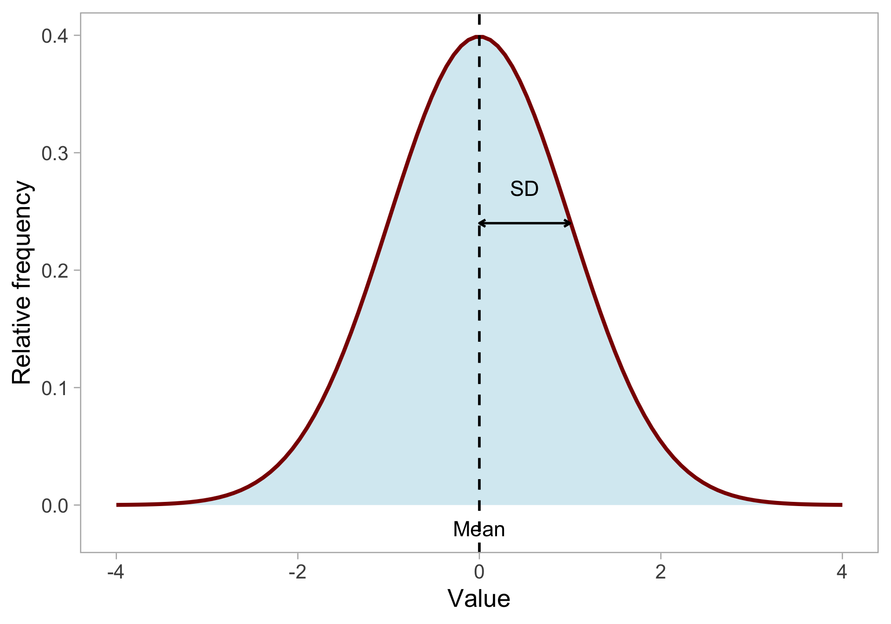
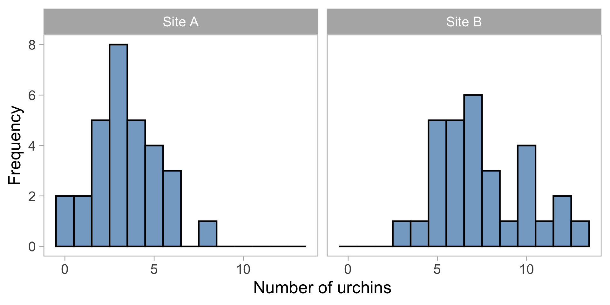
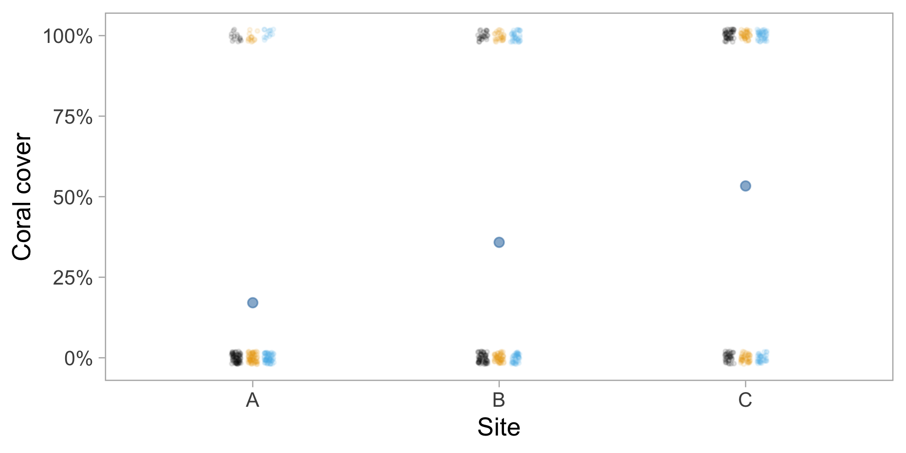
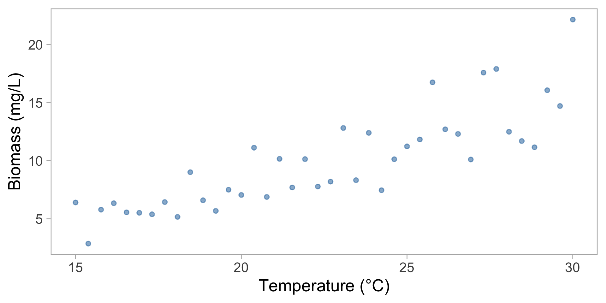
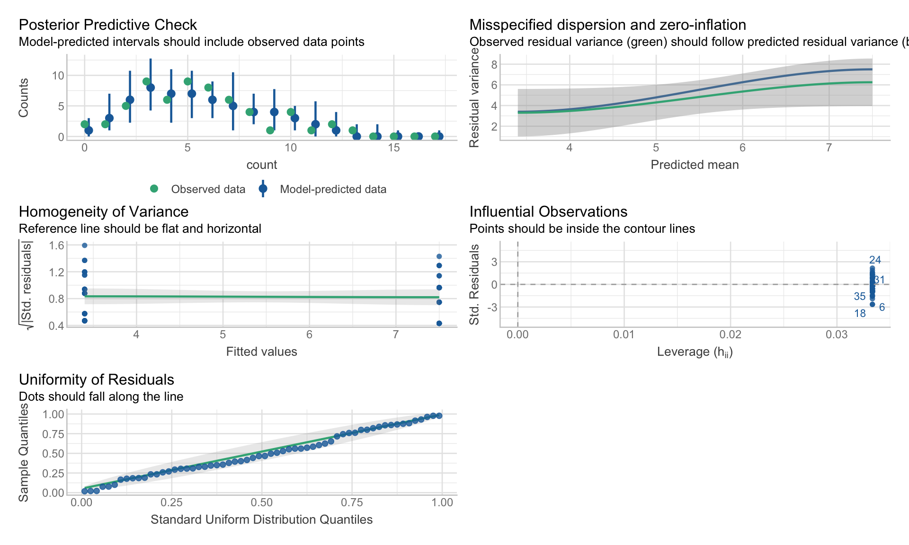
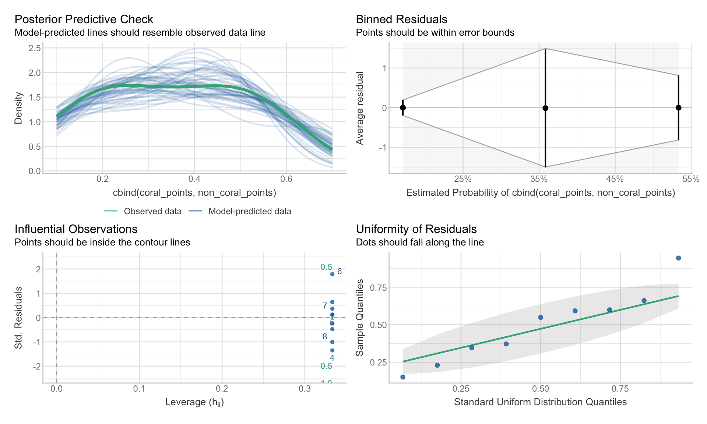
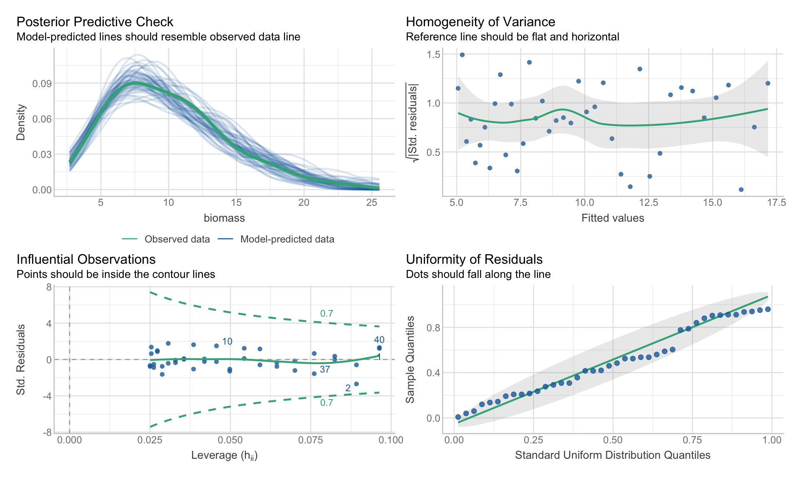

Distributions statistiques alternatives
Cours 6
Andreas Eich
Université de la Polynésie française
UE 6.7 Biostatistiques 2
Récapitulatif du cours précédent
- Modèles linéaires avec variables catégoriques (ANOVA), numériques (régression) ou mixtes (ANCOVA)
- Tests post-hoc pour comparer les groupes
- Hypothèses des modèles linéaires : indépendance, homoscédasticité, normalité
- Vérification des hypothèses avec
check_model()
Rappel : Distribution normale
Propriétés :
- Décrite par la moyenne \(\mu\) et l’écart-type \(\sigma\)
- Forme de cloche symétrique
- Définie de manière continue de \(-\infty\) à \(+\infty\)
- La plupart des valeurs proches de la moyenne
Propriétés « problématiques » de la normale
- Symétrique : Queues égales des deux côtés de la moyenne
- ❌ Problème pour les données asymétriques
- Définie sur tout l’intervalle : De \(-\infty\) à \(+\infty\)
- ❌ Problème si vos données ne peuvent pas être négatives (poids, longueur)
- ❌ Problème si vos données ont une limite supérieure (taux, pourcentage)
- ❌ Problème si vous avez des données de comptage
- Variance constante : Même dispersion partout
- ❌ Problème si la variabilité change avec la moyenne (plus de variabilité pour les individus plus grands)
Notre modèle jusqu’à présent
Pour la régression (par exemple) :
\[ \begin{align} y_i &\sim \mathrm{Normal}(\mu_i, \sigma) \\ \mu_i &= a + b \cdot x_i \end{align} \]
Mais qu’est-ce qui suit exactement une distribution normale ?
Normalité des résidus

Les résidus (différence entre les données et les prédictions) suivent la normalité
Pas les données brutes elles-mêmes
\(\mathrm{residual}_i = y_i - \mu_i\)
La distribution normale décrit le bruit aléatoire autour de la droite de régression
\[ \begin{align} y_i &\sim \mathrm{Normal}(\mu_i, \sigma) \\ \mu_i &= a + b \cdot x_i \end{align} \]
Quand la normalité échoue
Certains types de données ne peuvent jamais produire de résidus normalement distribués :
- Données de comptage : 0, 1, 2, 3, … (pas de valeurs négatives, uniquement des entiers)
- Données binaires : Oui/Non, Présence/Absence, Vivant/Mort
- Données strictement positives : Concentrations, biomasse, temps de réaction
Exemple 1 : Comptage d’oursins
Vous comptez le nombre d’oursins dans des quadrats de 1 m²

Problèmes avec un modèle normal :
- Les comptages sont des entiers (0, 1, 2, …)
- Aucune valeur négative possible
- La variance augmente souvent avec la moyenne
- Distribution asymétrique
Exemple 2 : Transects linéaires
Couverture corallienne
- 3 transects de 20 m par site
- Intervalles de 25 cm (80 points par transect)
- Enregistrer si le corail est présent ou absent

Problèmes avec un modèle normal :
- La réponse est une proportion (0 à 1)
- Le modèle pourrait prédire des valeurs < 0 ou > 1
- Les résidus ne peuvent pas être normaux
- La variance dépend de la proportion (plus élevée près de 0.5)
Exemple 3 : Biomasse de phytoplancton
Vous mesurez la biomasse (mg/L) en fonction de la température

Problèmes avec un modèle normal :
- La biomasse ne peut pas être négative
- La variance augmente avec la moyenne
- Distribution asymétrique (longue queue vers la droite)
Conséquences
- Prédictions impossibles : Le modèle pourrait prédire des comptages négatifs ou des proportions > 100%
Incertitude erronée : Les intervalles de confiance et les valeurs p deviennent peu fiables
- Vous pourriez conclure que quelque chose est significatif alors qu’il ne l’est pas
- Ou manquer les vrais motifs dans vos données
Estimations biaisées : Votre pente et votre ordonnée à l’origine seront systématiquement erronées
Hypothèses violées : Les graphiques de résidus montrent des motifs clairs au lieu d’une dispersion aléatoire
La solution : GLMs
Les modèles linéaires généralisés (GLMs) étendent les modèles linéaires pour gérer d’autres distributions
- Différentes distributions : Poisson, binomiale, gamma, etc.
- Mêmes concepts : variables explicatives, coefficients, prédictions
\[ y_i \sim \mathrm{Normal}(\mu, \sigma) \]
\[ y_i \sim \mathrm{Gamma}(\alpha, \beta) \]
Quelle distribution utiliser ?
| Type de réponse | Distribution | Exemple |
|---|---|---|
| Continu | Normal | Température, différence de taille |
| Comptages | Poisson | Nombre de larves, abondance de poissons |
| Binaire (Oui/Non) | Binomiale | Survie, présence/absence |
| Strictement positif | Gamma | Biomasse, concentration de nutriments |
Distributions et paramètres
| Distribution | Formule | Paramètres | Contraintes |
|---|---|---|---|
| Normal | \(y_i \sim \mathrm{Normal}(\mu, \sigma)\) | \(\mu\) (moyenne) \(\sigma\) (ET) |
\(\mu \in \mathbb{R}\) \(\sigma > 0\) |
| Poisson | \(y_i \sim \mathrm{Poisson}(\lambda)\) | \(\lambda\) (moyenne) | \(\lambda > 0\) |
| Binomiale | \(y_i \sim \mathrm{Binomial}(n, p)\) | \(n\) (essais) \(p\) (prob.) |
\(n \in \mathbb{N}\) \(p \in (0, 1)\) |
| Gamma | \(y_i \sim \mathrm{Gamma}(\alpha, \beta)\) | \(\alpha\) (forme) \(\beta\) (taux) |
\(\alpha > 0\) \(\beta > 0\) |
Fonctions de lien
Modèle normal
Une variable continue (\(y\)) augmente/diminue avec une autre variable continue (\(x\))
Modèle Poisson
Les comptages (\(y\)) augmentent/diminuent avec une autre variable continue (\(x\))
\[ \begin{align} \mathrm{y}_i \sim \mathrm{Normal(\mu}_i,~\mathrm{\sigma)} \\ \mu_i = a + b \cdot \mathrm{x}_i\\ \end{align} \]
\[ \begin{align} \mathrm{y}_i \sim \mathrm{Poisson}(\lambda_i) \\ \log(\lambda_i) = a + b \cdot \mathrm{x}_i\\ \end{align} \]
\(\mu_i\) peut avoir n’importe quelle valeur
\(\lambda_i\) doit être > 0 !
Fonctions de lien
Modèle normal
Une variable continue (\(y\)) augmente/diminue avec une autre variable continue (\(x\))
Modèle Poisson
Les comptages (\(y\)) augmentent/diminuent avec une autre variable continue (\(x\))
\[ \begin{align} \mathrm{y}_i \sim \mathrm{Normal(\mu}_i,~\mathrm{\sigma)} \\ \mu_i = a + b \cdot \mathrm{x}_i\\ \end{align} \]
\[ \begin{align} \mathrm{y}_i \sim \mathrm{Poisson}(\lambda_i) \\ \begin{aligned} {\color{darkorange}\log}(\lambda_i) &= a + b \cdot \mathrm{x}_i\\ \lambda_i &= e^{a + b \cdot x_i} \end{aligned} \end{align} \]
\(\mu_i\) peut avoir n’importe quelle valeur
\(\lambda_i\) doit être > 0 !
Fonction de lien assure que \(\lambda_i\) est positive
Fonctions de lien
La fonction de lien transforme le paramètre de distribution pour correspondre au modèle linéaire
| Type de données | Distribution | Lien typique | Assure |
|---|---|---|---|
| Comptages | Poisson | log | \(\mu > 0\) |
| Binaire (0/1) | Binomiale | logit | \(0 < p < 1\) |
| Strictement positif | Gamma | log | \(\mu > 0\) |
| Normal | Normal | identité | pas de contrainte |
GLM Poisson : Comptage d’oursins
Ajuster le modèle
GLM Poisson : Comptage d’oursins
Vérifier les hypothèses
Les mêmes outils fonctionnent !
Différences clés :
- Pas de vérification de la normalité (nous ne supposons pas que les résidus sont normaux)
- Vérification de la surdispersion (variance > moyenne pour Poisson)
- Résidus de déviance plutôt que résidus simples
GLM Poisson : Comptage d’oursins

GLM Poisson : Comptage d’oursins
Analyse
Impact des variables explicatives
Comparaisons (test post-hoc)
Marginal Contrasts Analysis
Level1 | Level2 | Difference | SE | 95% CI | z | p
------------------------------------------------------------------
Site B | Site A | 4.10 | 0.60 | [2.92, 5.28] | 6.80 | < .001
Variable predicted: count
Predictors contrasted: site
p-value adjustment method: Tukey
Contrasts are on the response-scale.GLM Poisson : Comptage d’oursins
Visualisation
GLM Poisson : Comptage d’oursins
Visualisation
GLM Binomiale : Couverture corallienne
Ajuster le modèle
Le lien logit assure que les probabilités prédites restent entre 0 et 1 :
\[ \log\left(\frac{p_i}{1-p_i}\right) = a + b \cdot \text{site}_i \]
Note
L’utilisation de cbind() préserve l’effort d’échantillonnage : 50% de couverture à partir de 80 points est plus précis que 50% à partir de 8 points !
GLM Binomiale : Couverture corallienne
Vérifier les hypothèses

GLM Binomiale : Couverture corallienne
Analyse
Impact des variables explicatives
Analysis of Deviance Table
Model: binomial, link: logit
Response: cbind(coral_points, non_coral_points)
Terms added sequentially (first to last)
Df Deviance Resid. Df Resid. Dev Pr(>Chi)
NULL 8 76.291
site 2 71.703 6 4.587 2.69e-16 ***
---
Signif. codes: 0 '***' 0.001 '**' 0.01 '*' 0.05 '.' 0.1 ' ' 1Moyennes prédites
Estimated Marginal Means
site | Probability | 95% CI
---------------------------------
A | 0.17 | [0.13, 0.22]
B | 0.36 | [0.30, 0.42]
C | 0.53 | [0.47, 0.60]
Variable predicted: cbind(coral_points, non_coral_points)
Predictors modulated: site
Predictors averaged: coral_points (28), non_coral_points (52)
Predictions are on the response-scale.Comparaisons (test post-hoc)
Marginal Contrasts Analysis
Level1 | Level2 | Difference | SE | 95% CI | z | p
------------------------------------------------------------------
B | A | 0.19 | 0.04 | [0.11, 0.26] | 4.77 | < .001
C | A | 0.36 | 0.04 | [0.28, 0.44] | 8.99 | < .001
C | B | 0.17 | 0.04 | [0.09, 0.26] | 3.92 | < .001
Variable predicted: cbind(coral_points, non_coral_points)
Predictors contrasted: site
Predictors averaged: coral_points (28), non_coral_points (52)
p-value adjustment method: Tukey
Contrasts are on the response-scale.GLM Binomiale : Couverture corallienne
Visualisation
GLM Binomiale : Couverture corallienne
Visualisation
GLM Gamma : Biomasse de plancton
Ajuster le modèle
GLM Gamma : Biomasse de plancton

GLM Gamma : Biomasse de plancton
Analyse
Impact des variables explicatives
Moyennes prédites
Model-based Predictions
temperature | Predicted | SE | 95% CI
----------------------------------------------
15.00 | 5.06 | 0.33 | [4.42, 5.78]
16.67 | 5.79 | 0.32 | [5.18, 6.48]
18.33 | 6.63 | 0.31 | [6.04, 7.28]
20.00 | 7.60 | 0.29 | [7.03, 8.21]
21.67 | 8.70 | 0.30 | [8.12, 9.33]
23.33 | 9.97 | 0.34 | [9.30, 10.68]
Variable predicted: biomass
Predictors modulated: temperature
Predictions are on the response-scale.GLM Gamma : Biomasse de plancton
Visualisation
GLM Gamma : Biomasse de plancton
Visualisation
Résumé
- La distribution normale décrit les résidus, pas les données brutes
- Certaines données (comptages, binaires, strictement positives) ne peuvent pas avoir de résidus normaux
- Les GLMs étendent les modèles linéaires à d’autres distributions
- Les fonctions de lien relient le modèle linéaire au paramètre de distribution
- Exemples GLM Poisson, Binomiale, Gamma
Vous connaissez déjà les concepts — les GLMs ne sont qu’une généralisation
À vous de jouer
- Allez sur le site web du cours
- Allez au calendrier
- Cliquez sur
TP 06 - Connectez-vous à Posit Cloud